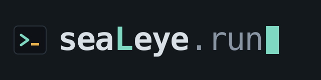

cd your-app && sealeye run
You have an app in a folder. seaLeye reads it, asks you a few questions, writes a plan you can read, and on yes builds the environment and gives you back a URL. It builds only from modules your platform team already trusts, and when your app needs something they do not offer yet, it says so plainly instead of building half of it.
Install
You need Node.js 20 or later. Paste this into your terminal:
$ curl -fsSL https://sealeye.run/install | sh
Sign in
Your platform team gives you a token. Paste it when asked; it is kept on your machine, for you alone.
$ sealeye login
Run it
$ cd your-app && sealeye run
What you get back
- A plan in your folder saying what will be built and what was assumed, before anything is built.
- A URL that works as soon as it is live, and stays the same every time you deploy again.
- Logs collected from the first request, with nothing to set up.